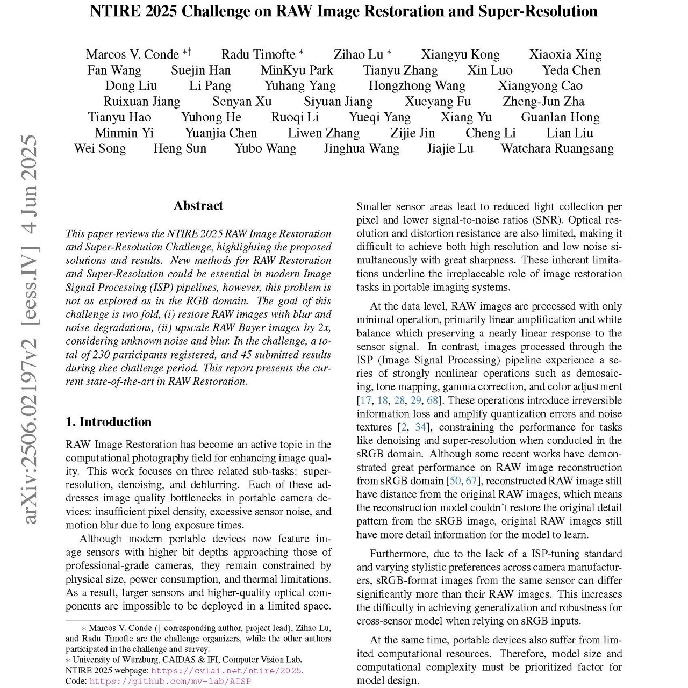

|
Zihao Lu Self introduction here Email / Google Scholar / LinkedIn / Github / Unsplash |

|
ResearchResearch preference here |

|
RAW Image Restoration and Super-Resolution: A NTIRE 2025 Challenge Survey
Marcos V. Conde, Radu Timofte, Zihao Lu CVPR Workshop, 2025 arXiv This paper reviews the NTIRE 2025 RAW Restoration Challenge, introducing the proposed solutions and results. This challenge aims to find an efficient deep neural network capable of super-resolution or image restoration on RAW images. |
Academic ServicesWorkshops: NTIRE 2025 CVPR |
|
Design and source code from Jon Barron's website. |